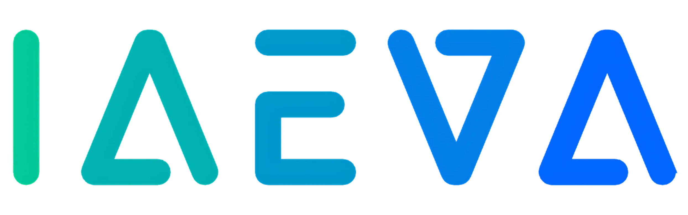

Bienvenido a la era de la optimización inteligente en el sector salud. La Inteligencia Artificial (IA) ya no es una visión de futuro, sino una herramienta poderosa y accesible que está redefiniendo la manera en que las clínicas y centros médicos interactúan con sus pacientes, gestionan sus operaciones y mejoran la calidad asistencial.
Desde agendar citas automáticamente 24/7 hasta responder preguntas frecuentes al instante y enviar recordatorios personalizados, un asistente de IA puede liberar tiempo valioso de tu equipo, reducir errores, minimizar el absentismo y, lo más importante, mejorar significativamente la experiencia de tus pacientes.
Pero, con tantas opciones emergentes, ¿cómo puedes estar seguro de elegir la solución y el proveedor adecuados?
En un sector donde la confidencialidad de los datos, la precisión de la información y la confianza son primordiales, tomar una decisión informada es más crucial que nunca. Una elección incorrecta no solo puede significar una inversión perdida, sino también riesgos para la seguridad de los datos de tus pacientes y la reputación de tu centro.
Queremos proporcionarte el conocimiento y las herramientas necesarias para navegar el panorama de la IA en salud con confianza. Aquí encontrarás:
Nuestro objetivo es que, al finalizar esta lectura, te sientas capacitado para seleccionar un asistente de IA que no solo sea tecnológicamente avanzado, sino también seguro, fiable, ético y perfectamente alineado con las necesidades únicas de tu práctica médica.
Empecemos a construir juntos un futuro más eficiente y centrado en el paciente.
En el corazón de cualquier servicio de salud yace la confianza. Y en la era digital, esta confianza se sustenta en la protección robusta de la información del paciente. Antes de deslumbrarte con funcionalidades, la seguridad y el cumplimiento normativo deben ser tu filtro principal.
Tu proveedor DEBE garantizar el cumplimiento de las leyes de protección de datos vigentes en tu país y en las regiones de tus pacientes. No basta con una afirmación; solicita detalles de cómo lo aseguran.
Considera seriamente proveedores que ofrezcan soluciones autoalojadas o que garanticen el almacenamiento de datos en servidores ubicados dentro del territorio legalmente requerido (por ejemplo, la Unión Europea para el RGPD). Esto te otorga un control significativamente mayor sobre quién accede a los datos y cómo se gestionan.
En IAEVA, priorizamos el autoalojamiento en servidores seguros dentro del territorio que exija la ley, administrados directamente por nuestro equipo experto.
Desconfía de proveedores que sean vagos sobre dónde y cómo se almacenan y procesan los datos.
La infraestructura que soporta a tu asistente de IA debe ser una fortaleza. Pregunta por las medidas de seguridad específicas:
No todos los asistentes de IA se construyen de la misma manera. Mientras algunas soluciones utilizan herramientas de automatización genéricas, el sector salud demanda un nivel superior de control, personalización y fiabilidad.
Herramientas de automatización como Make, n8n (en su uso más básico para IA conversacional) o Voiceflow pueden ser útiles para tareas sencillas, pero a menudo carecen de la profundidad necesaria para manejar la complejidad y la sensibilidad de las interacciones en salud.
Busca proveedores que utilicen plataformas de desarrollo de IA más robustas, que permitan un diseño detallado de los flujos de conversación (workflows) y un control granular sobre el comportamiento del asistente.
Utilizamos Dify autoalojado, una plataforma avanzada para crear chatbots y aplicaciones de IA con workflows personalizables, asegurando que cada interacción sea precisa y controlada.
Un asistente de IA no es solo un modelo de lenguaje; es un sistema con una lógica de conversación cuidadosamente diseñada. Un workflow bien estructurado asegura que el asistente:
Los modelos de IA, aunque avanzados, pueden en ocasiones generar información incorrecta o "inventada" (conocido como "alucinaciones"). Un proveedor responsable debe:
Probar y elegir el modelo de IA (hay muchos disponibles) que mejor se adapte a los casos de uso específicos del sector salud y de tu clínica.
Utilizar herramientas y metodologías para probar exhaustivamente el asistente, identificar y corregir posibles errores o tendencias a generar información falsa.
Evaluamos nuestros asistentes con herramientas como Langfuse para analizar su comportamiento, optimizar su rendimiento y minimizar el riesgo de respuestas inadecuadas.
Un asistente de IA verdaderamente eficaz no opera en un silo. Debe integrarse de manera fluida y coherente con los canales de comunicación que tus pacientes ya utilizan y con las herramientas de gestión de tu centro.
Hoy en día, la comunicación por WhatsApp es fundamental. Es crucial que la integración se realice a través de la API Oficial de Meta (Facebook). Esto garantiza:
Desconfía de soluciones que proponen integraciones no oficiales, ya que pueden ser inestables y poner en riesgo tu cuenta.
Un asistente disponible directamente en tu página web para atender consultas de visitantes y pacientes de forma inmediata.
Valora si necesitas presencia en otros canales como Telegram o Facebook Messenger y si el proveedor puede ofrecerlo.
Imagina poder supervisar todas las interacciones del asistente, independientemente del canal, desde una única plataforma unificada. Esto permite a tu personal:
Personalizamos e integramos una instancia autoalojada de Chatwoot, una potente plataforma de comunicación omnicanal, que conectamos con el chatbot desarrollado en Dify. Esto permite que nuestro asistente de IA gestione conversaciones de WhatsApp y web desde un único panel de control.
La capacidad de un asistente de IA para interactuar (o al menos, estar preparado para futuras interacciones) con tu software de agenda, sistema de gestión de pacientes (HIS/EMR) u otras herramientas, es un indicador de una solución avanzada y escalable.
Un asistente de IA de primer nivel va más allá de responder preguntas. Puede convertirse en un motor de eficiencia, automatizando tareas clave y ofreciendo nuevas vías de interacción que mejoran la experiencia del paciente y optimizan tus recursos.
El asistente debería ser capaz de:
Una de las funciones más valoradas. El envío automático de recordatorios (vía WhatsApp, SMS, email) reduce drásticamente las tasas de absentismo (pacientes que no se presentan).
Para estas tareas de notificación y gestión de datos sensibles de citas, es vital que el proveedor utilice sistemas de flujo de trabajo seguros y controlados, preferiblemente autoalojados.
Empleamos una instancia de n8n autoalojada para gestionar todas las notificaciones de citas, recordatorios y otras automatizaciones, asegurando que los datos se manejan dentro de nuestro entorno seguro y controlado.
Un factor crítico a tener en cuenta cuando se implementa un asistente de IA para la gestión de citas es la compatibilidad con los sistemas ya existentes en tu centro médico. Este aspecto merece una atención especial por sus implicaciones prácticas y de seguridad.
Antes de seleccionar una solución, es fundamental verificar si tu sistema actual de gestión de citas dispone de una API abierta que permita la integración con el asistente de IA. Esta comprobación debe realizarse considerando:
Existen situaciones en las que la integración directa puede no ser la mejor opción:
En IAEVA entendemos estas limitaciones y ofrecemos un sistema de gestión de citas independiente que puede funcionar en paralelo con tu infraestructura existente. Nuestro sistema se sincroniza sin problemas con calendarios populares como Google Calendar, Microsoft Outlook y Apple Calendar, proporcionando una capa intermedia segura entre el asistente de IA y tus sistemas críticos.
Esta aproximación ofrece ventajas significativas:
Para clínicas que buscan estar a la vanguardia, la incorporación de un asistente de IA por voz puede transformar la atención telefónica. Estos asistentes pueden:
Opcionalmente, integramos la API de VAPI para ofrecer a nuestros clientes un asistente de IA de voz altamente avanzado, añadiendo un canal de comunicación sofisticado a su oferta.
Has recorrido los aspectos fundamentales para elegir un asistente de IA que realmente aporte valor y seguridad a tu centro de salud. Ahora, es momento de consolidar este conocimiento en una herramienta práctica.
Utiliza esta lista como guía durante tus conversaciones con proveedores potenciales:
Elegir un asistente de IA es una decisión estratégica que impactará la eficiencia de tu clínica, la satisfacción de tus pacientes y la seguridad de su información. Esperamos que esta guía te haya proporcionado una base sólida para tomar la mejor elección.
En IAEVA, hemos construido nuestra solución pensando meticulosamente en cada uno de estos puntos críticos. Nuestro stack tecnológico, completamente autoalojado y gestionado por nosotros, junto con el uso de herramientas especializadas como Dify, Langfuse, Chatwoot y n8n (todas en versiones autoalojadas y personalizadas), está diseñado para ofrecer a los centros de salud un asistente de IA:
Nos encantaría conversar contigo, entender tus desafíos y mostrarte cómo nuestra tecnología puede ayudarte a alcanzar tus objetivos.
Contacta con nosotros directamente:
Visita nuestra web: iaeva.com
Contacta con nosotros para una demostración personalizada